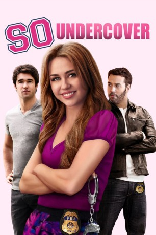

#9209 So Undercover
 
 IMDB-Wertung: 5.0 / 10
IMDB-Wertung: 5.0 / 10  Tomatometer: 6
Tomatometer: 6  Metascore: 0
Metascore: 0 
Der Vater von Molly ist nicht nur FBI-Agent, sondern steckt auch in einer schweren finanziellen Krise. Um ihm in seinem Dilemma zu helfen, heuert die clevere junge Frau ebenfalls beim FBI an und lässt sich in eine Studentenverbindung einschleusen. Dort soll sie mehr Informationen über die Tochter eines ehemaligen Kriminellen sammeln. Doch das Vertrauen der anderen zu gewinnen ist gar nicht so leicht, obendrein muss sie auch noch aufpassen nicht enttarnt zu werten. Zu allem Überfluss ist sie auch nicht die Einzige, die die Gruppe infiltriert, was Molly schon bald vor ein noch schwerwiegenderes Problem stellen könnte …
Jahr: 2012
Dauer: 93 Minuten
FSK: 12
Land: USA Studio: Millennium EntertainmentTonspuren: DTS - ,
Untertitel:
Auflösung: 1080p (1920x800) Größe: 5048 MB
Genre: Action, Komödie
Regisseur: Tom Vaughan
Drehbuch: Allan Loeb
Soundtrack: Stephen Trask
Darsteller:
 Miley Cyrus als Molly / Brook
Miley Cyrus als Molly / Brook Jeremy Piven als Armon
Jeremy Piven als Armon Mike O'Malley als Sam
Mike O'Malley als Sam- Josh Bowman als Nicholas
- Lauren McKnight als Alex
- Kelly Osbourne als Becky
 Eloise Mumford als Sasha
Eloise Mumford als Sasha Megan Park als Cotton
Megan Park als Cotton- Morgan Calhoun als Hunter
 Alexis Knapp als Taylor
Alexis Knapp als Taylor Matthew Settle als Professor Talloway
Matthew Settle als Professor Talloway Autumn Reeser als Bizzy
Autumn Reeser als Bizzy Ric Reitz als State Senator
Ric Reitz als State Senator Leticia Jimenez als State Senator's Girlfriend
Leticia Jimenez als State Senator's Girlfriend Jimmy Lee Jr. als Infidelity Trucker
Jimmy Lee Jr. als Infidelity Trucker- Cameron Deane Stewart als Cameron
 Phil Austin als Dr. Milton
Phil Austin als Dr. Milton Andrea Frankle als Agent Keller
Andrea Frankle als Agent Keller- Richard Brien als Drunk Frat Guy
 Lauren Alexandra als KKZ Sorority Girl (uncredited)
Lauren Alexandra als KKZ Sorority Girl (uncredited)- Brandon Bracey als Frat Guy (uncredited)
 J. Omar Castro als (uncredited)
J. Omar Castro als (uncredited) Kasey Emas als Summer's Friend (uncredited)
Kasey Emas als Summer's Friend (uncredited)- Sergio Figueroa als Hotel Guest (uncredited)
- Alice Ford als KKZ Sorority Girl (uncredited)
- Danielle Greenup als KKZ Sorority Girl (uncredited)
- Monika Guiberteau als Nose Job Girl (uncredited)
- Eric Hennig als College Student #1 / Fraternity Guy (uncredited)
- Adam Quirch als Fraternity Guy (uncredited)
 Randal Reeder als Hansen (uncredited)
Randal Reeder als Hansen (uncredited)- Paige Roberts als KKZ Core Sorority Girl (uncredited)
- Courtney Rood als KKZ Sorority Sister (uncredited)
- Blain Sanchez als Basketball Player (uncredited)
- Michael Warren als College Student (uncredited)
- Brian Peterson als Zingadi
- Ashley Treadaway als Another Girl
 Darcel White Moreno als Infidelity Waitress
Darcel White Moreno als Infidelity Waitress- Lawrence LeJohn als Agent Lawry
- Zac Waggener als Student
- Kermit Ruffins als Himself
- Derrick Freeman als Derrick Freeman
- Richard Knox als Richard Knox
- Joshua Aucoin als Fraternity Guy (uncredited)
- Brittney Barlow als Summer (uncredited)
- Beth Blevins als University Student (uncredited)
- Hillary Bosarge als KKZ Sorority Girl (uncredited)
- Allison Bryant als College Student (uncredited)
- Matthew Carmichael als Frat Guy (uncredited)
 Grant Case als Pool Partier (uncredited)
Grant Case als Pool Partier (uncredited)- Felder Charbonnet als Officer Brison (uncredited)
Datei: X:\2012(N-Z)\So Undercover (2012, FSK12, 1920x800).mkv seit 19.07.2018
Festplatte: HD 2012(N-Z)-2013(A-H)
 Es gibt insgesamt 138 Filme in der Gruppe '2012(N-Z)'
Es gibt insgesamt 138 Filme in der Gruppe '2012(N-Z)'